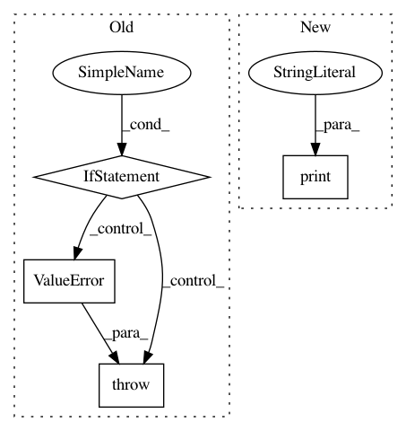

fdeeaff5e452e257bf3a3dd76e25c81304cc4c98,mmdnn/conversion/examples/tensorflow/vis_meta.py,,_main,#,14
Before Change
kill PID
if len(sys.argv) != 3:
raise ValueError("Usage: python vis_meta.py /path/to/model.meta /path/to/log/directory")
// load file
visualize(sys.argv[1], sys.argv[2])
os.system("tensorboard --logdir=" + sys.argv[2])
After Change
exit(1)
if not os.path.isdir(args.logdir):
print("The log directory does not exist.")
exit(1)
// Load file
visualize(args.ckpt, args.logdir)
In pattern: SUPERPATTERN
Frequency: 3
Non-data size: 4
Instances
Project Name: Microsoft/MMdnn
Commit Name: fdeeaff5e452e257bf3a3dd76e25c81304cc4c98
Time: 2020-03-15
Author: linmajia@users.noreply.github.com
File Name: mmdnn/conversion/examples/tensorflow/vis_meta.py
Class Name:
Method Name: _main
Project Name: kk7nc/RMDL
Commit Name: ac3f3222871de9e371e26913472529c353c8ba52
Time: 2018-06-02
Author: 3x3paul@gmail.com
File Name: RMDL/RMDL_Text.py
Class Name:
Method Name: Text_Classification
Project Name: ntucllab/libact
Commit Name: b82f226368d589878d2d4634af5b8a457cd331b7
Time: 2016-03-11
Author: yangarbiter@gmail.com
File Name: libact/labelers/interactive_labeler.py
Class Name: InteractiveLabeler
Method Name: label